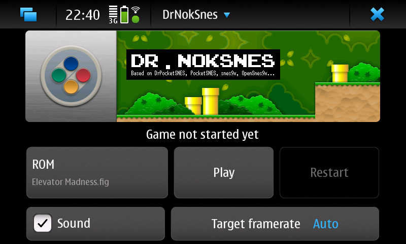

DrNokSnes is a Super Nintendo Entertainment System Emulator for the Nokia N800 and N810 Internet Tablets, and the N900 mobile phone.
It is a port (with some modifications plus a new interface) of DrPocketSnes, which is a mix of both PocketSnes and SquidgeSnes, originally designed with the GP32/GP2X in mind. Many thanks to Reesy and all the original authors for making a very fast emulator.
Please use extras repository to install. Currently it's only in extras-devel.

To be written. For now, remember the launcher has a menu.
The package installs a command line version of the emulator (drnoksnes), so if you want to try options not still on GUI, try drnoksnes --help. The command line version also allows you to create a bit more advanced key mappings.
The emulator will load a configuration file from ~/.config/drnoksnes.txt. This file is a popt-based configuration file, which means it uses long parameter names as "keys" to set. Here is an example configuration file (N810, N900) that maps the same keys the GUI does by default.
All development is done over Git.
Go to the Garage project page for bugs and feature requests.